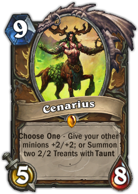
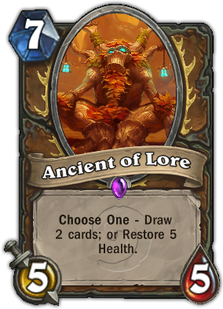
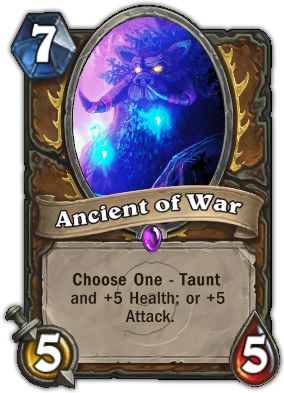

The Druid class is represented by Malfurion Stormrage. Druids are considered to be versatile characters, able to heal, deal damage and tank. Druids are excellent shape shifters, taking on different forms, such as cats, bears and ravens. In Hearthstone, this is represented by their Hero Power; Shapeshift. Druids generally try to get a lot of strong cards which cost a lot of mana in their deck. Cards such as Innervate, Wild Growth and Nourish allow Druids to quickly gain more mana crystals over the game, enabling them to enter the late game sooner than other classes do.
|  |  |  |